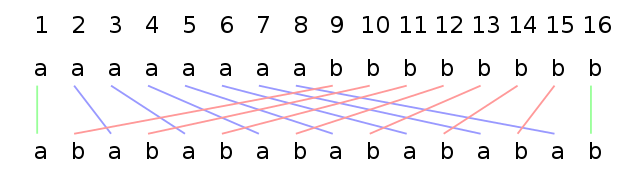

순열의 수-서로 다른 n 개 중 r 개를 골라 순서를 고려해 나열한 경우의 수.
에를 들어 3개의 문자 a,b,c에서 2개를 선택하는 방법과 선택한 후 나열하는 방법은 다음과 같다.
1-선택-순서를 고려하지 않음 {a,b}, {a,c}, {b,c}
2-선택 후 나열-순서를 고려함 (a,b), (b,a), (a,c), (c,a), (b,c), (c,b)
순열의 수-서로 다른 n개에서 r개를 택하여 일렬로 나열하는 것을 n개에서 r개를 택하는 순열이라고 하며,
이 순열의 수를 기호로 nPr와 같이 나타낸다.
nPr = n(n-1)......(n-r+1)